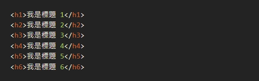

標題語法 < h1 > 至 < h6 > 的關係
什麼是 Headings？
我們在瀏覽網站時，每一篇文章都會有一個主要的標題 Title，這個是用於識別這一篇文章的中心思想和目的。
這個最重要的標題，在網頁的語言 HTML中，我們稱為最重的標題 Headings 1，其 HTML 語法就是 < h1 >，當中的【h】是代表【Headings】的簡稱。
他們是 6 兄弟，排序分別是由最重要的 < h1 > 至最不重要的 < h6 >
他們在一篇文章中發揮不同的功用和排版的美化作用。
定義和用法
< h1 > 到 < h6 > 標籤用於定義 HTML 標題，< h1 > 定義了最重要的標題和 < h6 > 定義最不重要的標題

定義
每篇文章只用一個 < h1 >
< h2 > 是最常用的標題
< h3 > 是輔助為主
< h4 > 較常出現在側邊欄
< h5 > 有機會在網站底部
< h6 > 的出場率非常低
熱門問題
- python求助.我找了好幾個小時都找不到問題出在哪裡.求大神幫忙!
- 請問各為位大大:在NAS網路分享槽直接打開檔會出現文件在此沒權限或記憶體與磁碟空間不足
但把檔案複製到本機電腦又可以開(如附件圖片)
- 不小心手殘刪除AD的預設入門GPO 求救如何復原
參考資料
這個連結會連到參考網站
什麼是 HTML 標題語法